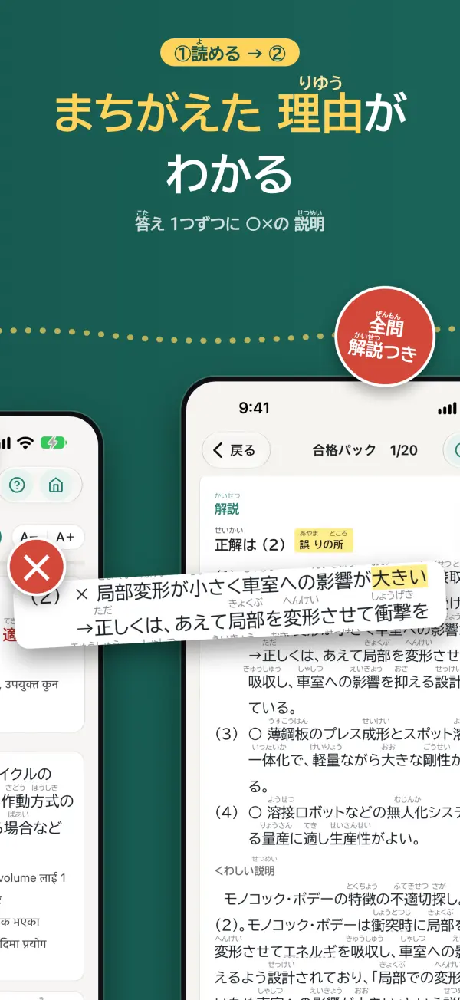
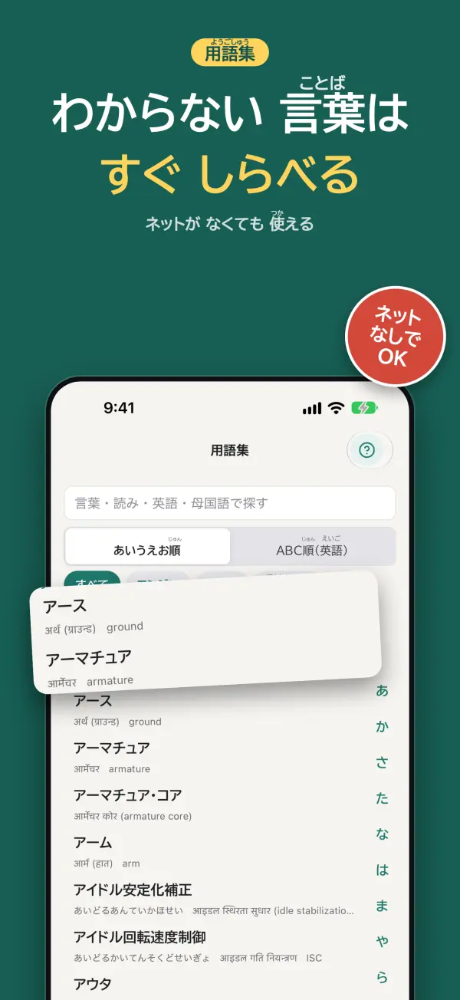
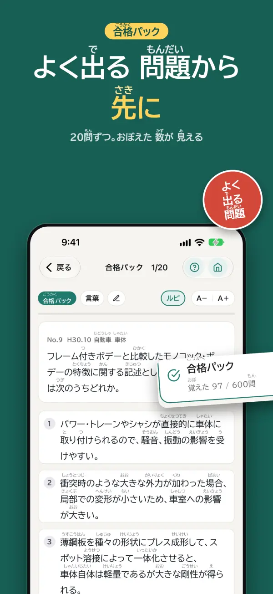
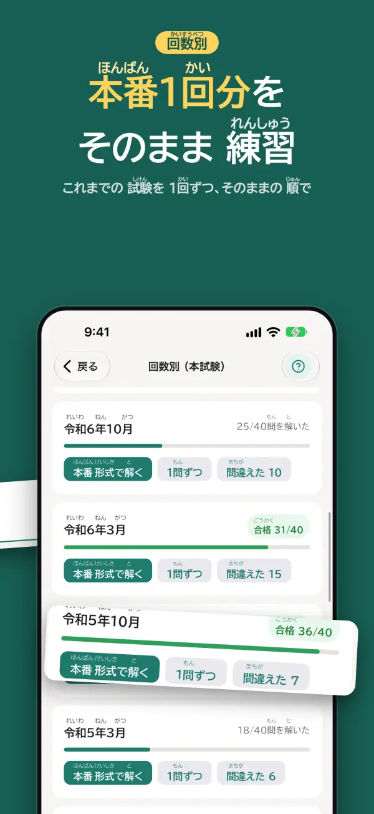

本番と同じ日本語の問題文のまま。読み方と意味を、その場で確かめながら解けます。
エンジンの性能に関する記述として、適切なものは次のうちどれか。
級ごとの「総合の予想問題」（本番1回分の形）は、買わずに全部解けます
問題文・選択肢・正解は、問題用紙と正答表で照らし合わせました
2級・3級の学科は、2027年3月14日の試験から「総合」に変わります。総合の試験の過去問は、まだどこにもありません。そこで、これまでの過去問を総合の形に組み直し、足りない所を補いました。
想定問題は、これからも増やしていきます。
総合の試験が始まって出題の傾向が見えてきたら、それに合わせて追加していきます。買った級の問題は、増えた分も追加の支払いなしで解けます。
想定問題は本試験の問題ではありません。問題の上に「想定問題」と出るので、過去問と見分けられます。総合の分野ごとの問題数はまだ公表されていません。公表されたら、それに合わせます。
学科の過去問は、漢字の多い長い文です。整備の知識があっても、読み方や言葉の意味が分からないと、答えを考える前に、読むだけで時間がかかります。
紙の過去問や問題集は、ふりがなや訳が付いていないものが多く、1語ずつ調べることになります。
もう1つ、気づきにくい落とし穴があります。
ひとりで過去問を解いていると、答えや問題文が本当に合っているかを、自分では確かめにくいものです。だから、元の資料と照らし合わせてある問題で練習することが大切です。
全部の漢字に。ボタン1つで消せるので、本番に近い形でも練習できます。
問題文と解説に。英語・ネパール語・中国語・ベトナム語・インドネシア語・シンハラ語・ミャンマー語。
2級の車体・電装では、シンハラ語・ミャンマー語の訳は一部の問題だけです。
どこが違うのかが、1つずつ分かります。
整備の専門用語の意味を、自分のことばで確かめられます。本試験によく出る言葉もまとめてあります。


| 間違いの理由がすぐ分かる | 選択肢ごとの○×の解説と訳。訳や解説の誤りは、アプリから報告できます |
|---|---|
| 範囲を絞る | 合格パック（出やすい問題に絞ったセット） |
| レベルに合わせる | 間違えた問題の解き直しと、分野ごとの正答率 |
整備士の学校で国家試験の補習を続けてきた経験から作りました。
オフラインで使えます。登録やログインはありません。個人データを集めません。合格パックは、まだ覚えていない問題から20問ずつ出題します。
このアプリは個人が作ったもので、日整連の公認・監修を受けたものではありません。
合格パックは、過去の出題傾向と新しい総合の教科書から、出やすい問題を選んだセットです。まだ覚えていない問題から20問ずつ出題します。


2級・3級の学科は、2027年（令和9年）3月14日の試験から「総合」に変わります。1級（一級小型）は、早くて2028年（令和10年）3月からの見込みです。総合の試験の過去問は、まだありません。収録しているのは、これまでの試験の過去問を、総合の分野に並べ直したものです。くわしくは 総合の試験への変更と勉強のしかた。
あります。過去問に無い所は、新しい総合の教科書をもとに作った「想定問題」で補っています（本試験の問題ではないので、問題の上に「想定問題」と出ます）。想定問題は、これからも増やしていきます。買った級の問題は、増えた分も追加の支払いなしで解けます。
試験と同じ日本語の問題に、全部の漢字のふりがなと、英語・ネパール語・中国語・シンハラ語・ベトナム語・ミャンマー語・インドネシア語の参考訳を付けています。問題ごとに専門用語の訳も出ます。本番は日本語なので、最後は日本語の問題文だけで解けるように練習しましょう。
級ごとに本番1回分の形の「総合の予想問題」（2級40問・3級30問・1級50問）は、買わなくても全部解けます。すべての問題を解くには、級ごとの買い切り（3級980円・2級1,500円・1級1,800円）を選びます。サブスクリプションはありません。
訳と解説は AI で作った参考です。意味が違うときは、日本語の問題文が正しいものです。本番は日本語なので、ふりがなを消して解く練習もしてください。
いいえ。個人が作ったアプリで、日整連の公認・監修ではありません。収録している問題は、日整連がホームページで公開している自動車整備技能登録試験（学科）の問題です。
ふりがな・翻訳・解説を付けてアプリで提供することについて、2026年10月に日整連へ書面で問い合わせ、許諾は不要との回答を得ています。公認・監修を受けたという意味ではありません。
合格パックは、まだ覚えていない問題から20問ずつ出るので、短い時間でも進められます。ネットがなくても開けます。間違えた問題だけを解き直すこともできます。
アカウントは要りません。個人データを集めません。
合格を約束するものではありません。過去問で練習するための道具です。
級ごとの「総合の予想問題」（本番1回分の形）は、買わなくても全部解けます。すべての問題は、級ごとの買い切りで解けます。
学校・団体の方へ
整備士の学校などで、学生の人数分をまとめて導入できる形（Apple School Manager）を検討しています。関心のある学校・団体の方は、学生の人数と使いたい級を添えて、お問い合わせください。
学校での導入について問い合わせる自動車整備技能登録試験（学科）の過去問です。2級（二級ガソリン・ジーゼル・二輪・シャシ、自動車車体、自動車電気装置）と3級（三級ガソリン・ジーゼル・シャシ・二輪）は平成28年10月〜令和8年10月、1級（一級小型の学科〈筆記〉）は平成29年3月〜令和8年3月。総合の試験の分野（エンジン・シャシ・電子制御装置・整備機器等・法規）に並べ直しています。
2級・3級の学科は、令和9年（2027年）3月14日の試験から、ガソリン・ジーゼル・シャシ・二輪などに分かれていた試験が1つの「総合」の試験になります。1級（一級小型）は早くて令和10年3月からの見込みです。総合の試験への変更と勉強のしかた
iPhone・iPad（iOS 16.4 以上）。ホーム画面では「整備士過去問」と表示されます。ふりがなの読みは「自動車整備用語辞典」に合わせています。